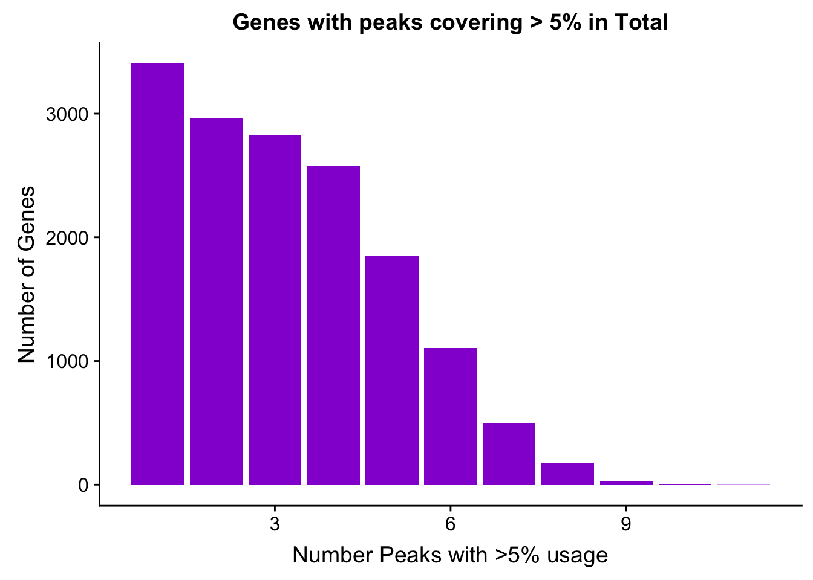
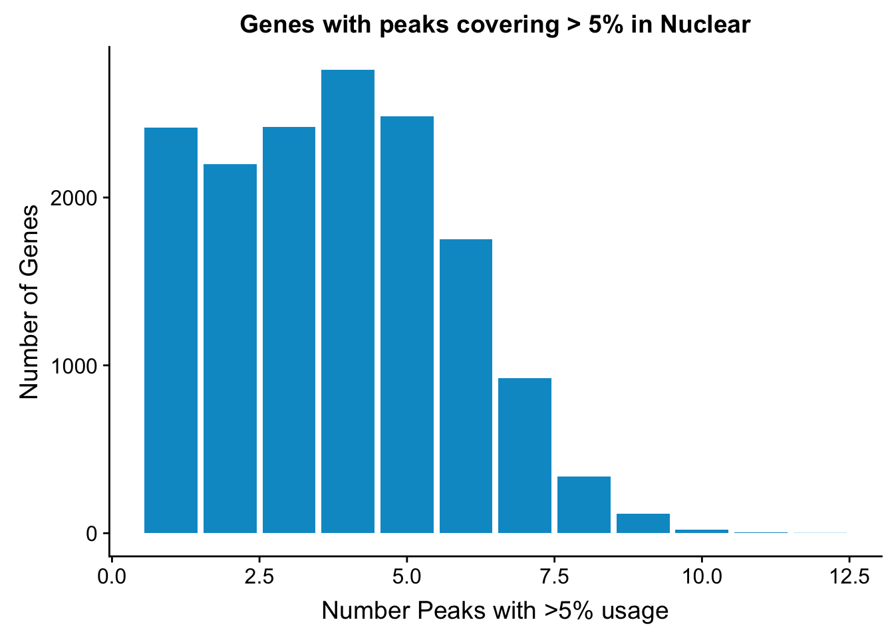

Peak QC data and figures
Briana Mittleman
1/16/2019
Last updated: 2019-01-16
workflowr checks: (Click a bullet for more information)-
✔ R Markdown file: up-to-date
Great! Since the R Markdown file has been committed to the Git repository, you know the exact version of the code that produced these results.
-
✔ Environment: empty
Great job! The global environment was empty. Objects defined in the global environment can affect the analysis in your R Markdown file in unknown ways. For reproduciblity it’s best to always run the code in an empty environment.
-
✔ Seed:
set.seed(12345)The command
set.seed(12345)was run prior to running the code in the R Markdown file. Setting a seed ensures that any results that rely on randomness, e.g. subsampling or permutations, are reproducible. -
✔ Session information: recorded
Great job! Recording the operating system, R version, and package versions is critical for reproducibility.
-
Great! You are using Git for version control. Tracking code development and connecting the code version to the results is critical for reproducibility. The version displayed above was the version of the Git repository at the time these results were generated.✔ Repository version: 6aa94e4
Note that you need to be careful to ensure that all relevant files for the analysis have been committed to Git prior to generating the results (you can usewflow_publishorwflow_git_commit). workflowr only checks the R Markdown file, but you know if there are other scripts or data files that it depends on. Below is the status of the Git repository when the results were generated:
Note that any generated files, e.g. HTML, png, CSS, etc., are not included in this status report because it is ok for generated content to have uncommitted changes.Ignored files: Ignored: .DS_Store Ignored: .Rhistory Ignored: .Rproj.user/ Ignored: data/.DS_Store Ignored: output/.DS_Store Untracked files: Untracked: KalistoAbundance18486.txt Untracked: analysis/DirectionapaQTL.Rmd Untracked: analysis/EvaleQTLs.Rmd Untracked: analysis/PreAshExplore.Rmd Untracked: analysis/YL_QTL_test.Rmd Untracked: analysis/ncbiRefSeq_sm.sort.mRNA.bed Untracked: analysis/snake.config.notes.Rmd Untracked: analysis/verifyBAM.Rmd Untracked: code/PeaksToCoverPerReads.py Untracked: code/strober_pc_pve_heatmap_func.R Untracked: data/18486.genecov.txt Untracked: data/APApeaksYL.total.inbrain.bed Untracked: data/ChromHmmOverlap/ Untracked: data/GM12878.chromHMM.bed Untracked: data/GM12878.chromHMM.txt Untracked: data/LianoglouLCL/ Untracked: data/LocusZoom/ Untracked: data/NuclearApaQTLs.txt Untracked: data/PeakCounts/ Untracked: data/PeakUsage/ Untracked: data/PeaksUsed/ Untracked: data/RNAkalisto/ Untracked: data/TotalApaQTLs.txt Untracked: data/Totalpeaks_filtered_clean.bed Untracked: data/UnderstandPeaksQC/ Untracked: data/YL-SP-18486-T-combined-genecov.txt Untracked: data/YL-SP-18486-T_S9_R1_001-genecov.txt Untracked: data/YL_QTL_test/ Untracked: data/apaExamp/ Untracked: data/bedgraph_peaks/ Untracked: data/bin200.5.T.nuccov.bed Untracked: data/bin200.Anuccov.bed Untracked: data/bin200.nuccov.bed Untracked: data/clean_peaks/ Untracked: data/comb_map_stats.csv Untracked: data/comb_map_stats.xlsx Untracked: data/comb_map_stats_39ind.csv Untracked: data/combined_reads_mapped_three_prime_seq.csv Untracked: data/diff_iso_trans/ Untracked: data/ensemble_to_genename.txt Untracked: data/example_gene_peakQuant/ Untracked: data/explainProtVar/ Untracked: data/filtered_APApeaks_merged_allchrom_refseqTrans.closest2End.bed Untracked: data/filtered_APApeaks_merged_allchrom_refseqTrans.closest2End.noties.bed Untracked: data/first50lines_closest.txt Untracked: data/gencov.test.csv Untracked: data/gencov.test.txt Untracked: data/gencov_zero.test.csv Untracked: data/gencov_zero.test.txt Untracked: data/gene_cov/ Untracked: data/joined Untracked: data/leafcutter/ Untracked: data/merged_combined_YL-SP-threeprimeseq.bg Untracked: data/mol_overlap/ Untracked: data/mol_pheno/ Untracked: data/nom_QTL/ Untracked: data/nom_QTL_opp/ Untracked: data/nom_QTL_trans/ Untracked: data/nuc6up/ Untracked: data/nuc_10up/ Untracked: data/other_qtls/ Untracked: data/pQTL_otherphen/ Untracked: data/peakPerRefSeqGene/ Untracked: data/perm_QTL/ Untracked: data/perm_QTL_opp/ Untracked: data/perm_QTL_trans/ Untracked: data/perm_QTL_trans_filt/ Untracked: data/reads_mapped_three_prime_seq.csv Untracked: data/smash.cov.results.bed Untracked: data/smash.cov.results.csv Untracked: data/smash.cov.results.txt Untracked: data/smash_testregion/ Untracked: data/ssFC200.cov.bed Untracked: data/temp.file1 Untracked: data/temp.file2 Untracked: data/temp.gencov.test.txt Untracked: data/temp.gencov_zero.test.txt Untracked: data/threePrimeSeqMetaData.csv Untracked: output/picard/ Untracked: output/plots/ Untracked: output/qual.fig2.pdf Unstaged changes: Modified: analysis/28ind.peak.explore.Rmd Modified: analysis/CompareLianoglouData.Rmd Modified: analysis/NewPeakPostMP.Rmd Modified: analysis/apaQTLoverlapGWAS.Rmd Modified: analysis/cleanupdtseq.internalpriming.Rmd Modified: analysis/coloc_apaQTLs_protQTLs.Rmd Modified: analysis/dif.iso.usage.leafcutter.Rmd Modified: analysis/diff_iso_pipeline.Rmd Modified: analysis/explainpQTLs.Rmd Modified: analysis/explore.filters.Rmd Modified: analysis/flash2mash.Rmd Modified: analysis/mispriming_approach.Rmd Modified: analysis/overlapMolQTL.Rmd Modified: analysis/overlapMolQTL.opposite.Rmd Modified: analysis/overlap_qtls.Rmd Modified: analysis/peakOverlap_oppstrand.Rmd Modified: analysis/pheno.leaf.comb.Rmd Modified: analysis/swarmPlots_QTLs.Rmd Modified: analysis/test.max2.Rmd Modified: analysis/understandPeaks.Rmd Modified: code/Snakefile
Expand here to see past versions:
| File | Version | Author | Date | Message |
|---|---|---|---|---|
| Rmd | 6aa94e4 | Briana Mittleman | 2019-01-16 | plots for 5% usage |
I want to do some QC and filtering on the peaks to go along with the number of peaks to cover % of a gene figure.
Number of called peaks
peaks used at X% in total/nuclear
number of genes
library(tidyverse)── Attaching packages ──────────────────────────────────────────────────────────── tidyverse 1.2.1 ──✔ ggplot2 3.0.0 ✔ purrr 0.2.5
✔ tibble 1.4.2 ✔ dplyr 0.7.6
✔ tidyr 0.8.1 ✔ stringr 1.3.1
✔ readr 1.1.1 ✔ forcats 0.3.0── Conflicts ─────────────────────────────────────────────────────────────── tidyverse_conflicts() ──
✖ dplyr::filter() masks stats::filter()
✖ dplyr::lag() masks stats::lag()library(data.table)
Attaching package: 'data.table'The following objects are masked from 'package:dplyr':
between, first, lastThe following object is masked from 'package:purrr':
transposelibrary(workflowr)This is workflowr version 1.1.1
Run ?workflowr for help getting startedtotalPeakUs=read.table("../data/PeakUsage/filtered_APApeaks_merged_allchrom_refseqGenes.Transcript_sm_quant.Total.pheno_fixed.txt.gz", header = T, stringsAsFactors = F) %>% separate(chrom, sep = ":", into = c("chr", "start", "end", "id")) %>% separate(id, sep="_", into=c("gene", "strand", "peak"))
nuclearPeakUs=read.table("../data/PeakUsage/filtered_APApeaks_merged_allchrom_refseqGenes.Transcript_sm_quant.Nuclear.pheno_fixed.txt.gz", header = T, stringsAsFactors = F) %>% separate(chrom, sep = ":", into = c("chr", "start", "end", "id")) %>% separate(id, sep="_", into=c("gene", "strand", "peak"))There are 338141 called peaks in the data.
I need to make the fractions numeric, I will do this in python because I can go through each value, split them and get the numeric.
It will be easiest if I write the counts out:
#write.table(totalPeakUs[,7:45], file="../data/PeakUsage/filtered_APApeaks_merged_allchrom_refseqGenes.Transcript_sm_quant.Total.pheno_fixed.CountsOnly",quote=FALSE, col.names = F, row.names = F)
#write.table(nuclearPeakUs[,7:45], file="../data/PeakUsage/filtered_APApeaks_merged_allchrom_refseqGenes.Transcript_sm_quant.Nuclear.pheno_fixed.CountsOnly",quote=FALSE, col.names = F, row.names = F)Move these to /project2/gilad/briana/threeprimeseq/data/PeakUsage
convertCount2Numeric.py
def convert(infile, outfile):
final=open(outfile, "w")
for ln in open(infile, "r"):
line_list=ln.split()
new_list=[]
for i in line_list:
num, dem = i.split("/")
if dem == "0":
perc = "0.00"
else:
perc = int(num)/int(dem)
perc=round(perc,2)
perc= str(perc)
new_list.append(perc)
final.write("\t".join(new_list)+ '\n')
final.close()
convert("/project2/gilad/briana/threeprimeseq/data/PeakUsage/filtered_APApeaks_merged_allchrom_refseqGenes.Transcript_sm_quant.Total.pheno_fixed.CountsOnly","/project2/gilad/briana/threeprimeseq/data/PeakUsage/filtered_APApeaks_merged_allchrom_refseqGenes.Transcript_sm_quant.Total.pheno_fixed.CountsOnlyNUMERIC.txt" )
convert("/project2/gilad/briana/threeprimeseq/data/PeakUsage/filtered_APApeaks_merged_allchrom_refseqGenes.Transcript_sm_quant.Nuclear.pheno_fixed.CountsOnly","/project2/gilad/briana/threeprimeseq/data/PeakUsage/filtered_APApeaks_merged_allchrom_refseqGenes.Transcript_sm_quant.Nuclear.pheno_fixed.CountsOnlyNUMERIC.txt")
Because any value less than .001 becomes 0, all peaks for a gene will not add to zero.
ind=colnames(totalPeakUs)[7:dim(totalPeakUs)[2]]
totalPeakUs_CountNum=read.table("../data/PeakUsage/filtered_APApeaks_merged_allchrom_refseqGenes.Transcript_sm_quant.Total.pheno_fixed.CountsOnlyNUMERIC.txt", col.names = ind)
nuclearPeakUs_CountNum=read.table("../data/PeakUsage/filtered_APApeaks_merged_allchrom_refseqGenes.Transcript_sm_quant.Nuclear.pheno_fixed.CountsOnlyNUMERIC.txt", col.names = ind)Numeric values with the annotations:
totalPeak=as.data.frame(cbind(totalPeakUs[,1:6], totalPeakUs_CountNum))
nuclearPeak=as.data.frame(cbind(nuclearPeakUs[,1:6], nuclearPeakUs_CountNum))Get the mean coverage for each peak.
totalPeakUs_CountNum_mean=rowMeans(totalPeakUs_CountNum)
nuclearPeakUs_CountNum_mean=rowMeans(nuclearPeakUs_CountNum)Append these to the inforamtion about the peak.
TotalPeakUSMean=as.data.frame(cbind(totalPeakUs[,1:6],totalPeakUs_CountNum_mean))
NuclearPeakUSMean=as.data.frame(cbind(nuclearPeakUs[,1:6],nuclearPeakUs_CountNum_mean))Get the number of genes with mean(usage > 5%)
Total:
TotalPeakUSMean_filt=TotalPeakUSMean %>% filter(totalPeakUs_CountNum_mean>=.05) %>% group_by(gene) %>% summarise(Npeaks=n())I want to get how many genes have 1,2,3,4 ect:
totalPeaksPerGene=TotalPeakUSMean_filt %>% group_by(Npeaks) %>% summarise(GenesWithNPeaks=n())
ggplot(totalPeaksPerGene,aes(x=Npeaks,y=GenesWithNPeaks)) + geom_bar(stat="identity",fill="darkviolet") + labs(x="Number Peaks with >5% usage", y="Number of Genes", title="Genes with peaks covering > 5% in Total")
Nuclear:
NuclearPeakUSMean_filt=NuclearPeakUSMean %>% filter(nuclearPeakUs_CountNum_mean>=.05) %>% group_by(gene) %>% summarise(Npeaks=n())I want to get how many genes have 1,2,3,4 ect:
nuclearPeaksPerGene=NuclearPeakUSMean_filt %>% group_by(Npeaks) %>% summarise(GenesWithNPeaks=n())
nuclearPeaksPerGene$GenesWithNPeaks=as.integer(nuclearPeaksPerGene$GenesWithNPeaks)
ggplot(nuclearPeaksPerGene,aes(x=Npeaks,y=GenesWithNPeaks)) + geom_bar(stat="identity", fill="deepskyblue3") + labs(x="Number Peaks with >5% usage", y="Number of Genes", title="Genes with peaks covering > 5% in Nuclear")
Genes with at least 1:
#nuclear
nrow(NuclearPeakUSMean_filt) [1] 15431#total
nrow(TotalPeakUSMean_filt) [1] 15435Join them to put on the same plot:
gene level
nPeaksBoth_gene=TotalPeakUSMean_filt %>% full_join(NuclearPeakUSMean_filt, by="gene")
colnames(nPeaksBoth_gene)= c("Gene", "Total", "Nuclear")
nPeaksBoth_gene$Nuclear= nPeaksBoth_gene$Nuclear %>% replace_na(0)
nPeaksBoth_gene$Total= nPeaksBoth_gene$Total %>% replace_na(0)peak number level:
nPeaksBoth=totalPeaksPerGene %>% full_join(nuclearPeaksPerGene, by="Npeaks")
colnames(nPeaksBoth)= c("Peaks", "Total", "Nuclear")
nPeaksBoth$Total= nPeaksBoth$Total %>% replace_na(0)
#melt nPeaksBoth
nPeaksBoth_melt=melt(nPeaksBoth, id.var="Peaks")
colnames(nPeaksBoth_melt)= c("Peaks", "Fraction", "Genes")Make a plot:
peakUsage5perc=ggplot(nPeaksBoth_melt, aes(x=Peaks, y=Genes, fill=Fraction)) + geom_bar(stat="identity", position = "dodge") + labs(title="Number of Genes with >5% Peak Usage") + theme(axis.text.y = element_text(size=12),axis.title.y=element_text(size=10,face="bold"), axis.title.x=element_text(size=12,face="bold"))+ scale_fill_manual(values=c("darkviolet","deepskyblue3")) + facet_grid(~Fraction)
peakUsage5perc
ggsave(peakUsage5perc, file="../output/plots/QC_plots/peakUsage5perc.png")Saving 7 x 5 in imagePeaks with >5 per not at gene level:
#nuclear
NuclearPeakUSMean %>% filter(nuclearPeakUs_CountNum_mean>=.05) %>% nrow()[1] 58494#total
TotalPeakUSMean %>% filter(totalPeakUs_CountNum_mean>=.05) %>% nrow()[1] 49234Session information
sessionInfo()R version 3.5.1 (2018-07-02)
Platform: x86_64-apple-darwin15.6.0 (64-bit)
Running under: macOS 10.14.1
Matrix products: default
BLAS: /Library/Frameworks/R.framework/Versions/3.5/Resources/lib/libRblas.0.dylib
LAPACK: /Library/Frameworks/R.framework/Versions/3.5/Resources/lib/libRlapack.dylib
locale:
[1] en_US.UTF-8/en_US.UTF-8/en_US.UTF-8/C/en_US.UTF-8/en_US.UTF-8
attached base packages:
[1] stats graphics grDevices utils datasets methods base
other attached packages:
[1] bindrcpp_0.2.2 workflowr_1.1.1 data.table_1.11.8
[4] forcats_0.3.0 stringr_1.3.1 dplyr_0.7.6
[7] purrr_0.2.5 readr_1.1.1 tidyr_0.8.1
[10] tibble_1.4.2 ggplot2_3.0.0 tidyverse_1.2.1
loaded via a namespace (and not attached):
[1] tidyselect_0.2.4 reshape2_1.4.3 haven_1.1.2
[4] lattice_0.20-35 colorspace_1.3-2 htmltools_0.3.6
[7] yaml_2.2.0 rlang_0.2.2 R.oo_1.22.0
[10] pillar_1.3.0 glue_1.3.0 withr_2.1.2
[13] R.utils_2.7.0 modelr_0.1.2 readxl_1.1.0
[16] bindr_0.1.1 plyr_1.8.4 munsell_0.5.0
[19] gtable_0.2.0 cellranger_1.1.0 rvest_0.3.2
[22] R.methodsS3_1.7.1 evaluate_0.11 labeling_0.3
[25] knitr_1.20 broom_0.5.0 Rcpp_0.12.19
[28] scales_1.0.0 backports_1.1.2 jsonlite_1.5
[31] hms_0.4.2 digest_0.6.17 stringi_1.2.4
[34] grid_3.5.1 rprojroot_1.3-2 cli_1.0.1
[37] tools_3.5.1 magrittr_1.5 lazyeval_0.2.1
[40] crayon_1.3.4 whisker_0.3-2 pkgconfig_2.0.2
[43] xml2_1.2.0 lubridate_1.7.4 assertthat_0.2.0
[46] rmarkdown_1.10 httr_1.3.1 rstudioapi_0.8
[49] R6_2.3.0 nlme_3.1-137 git2r_0.23.0
[52] compiler_3.5.1
This reproducible R Markdown analysis was created with workflowr 1.1.1